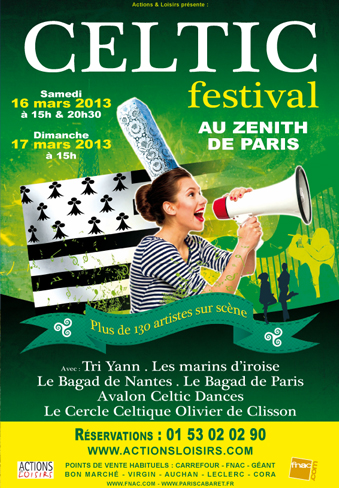
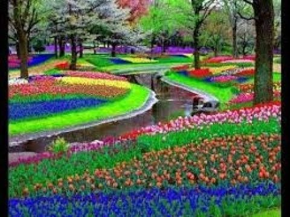
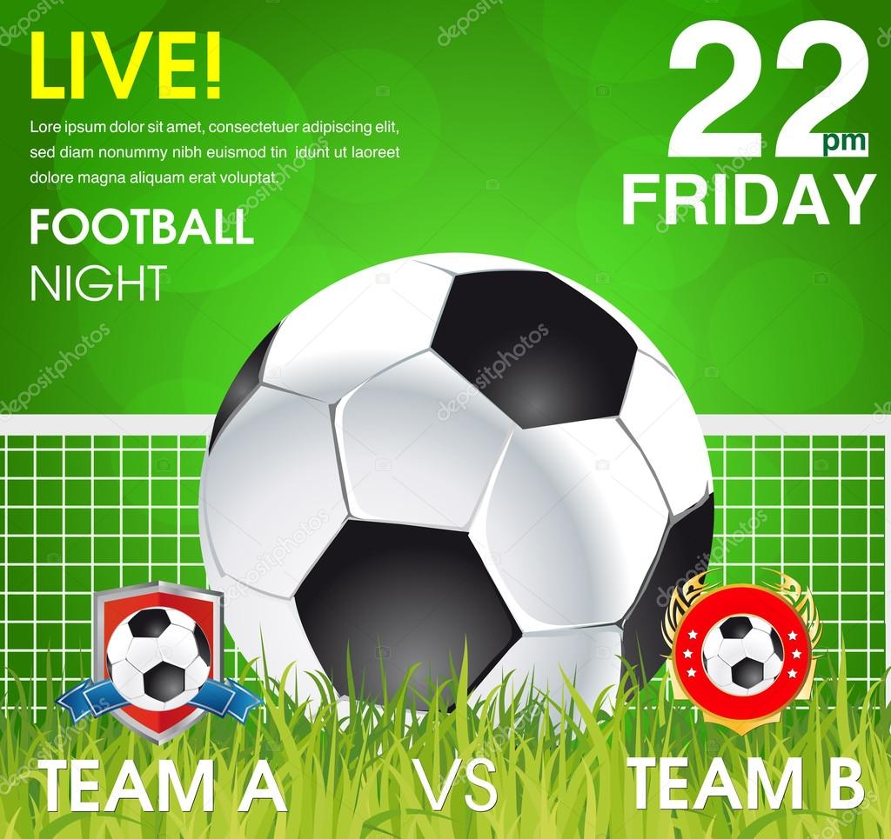

Lecture

la lecture est une de mes meilleur passion
j'ai aimé les romans tel que : les frasques d'ebinto, jusqu'au seuil de l'ireel, je passerai, sous l'orage, maimouna...
la peche
j'adore la peche depuis l'enfance
j'aime passer plus de temps au bord du marigot entrain de pecher.

football

j'aime assister au grande compétitions comme champion's league, la coupe du monde etc...
mon veritable fan est Messi